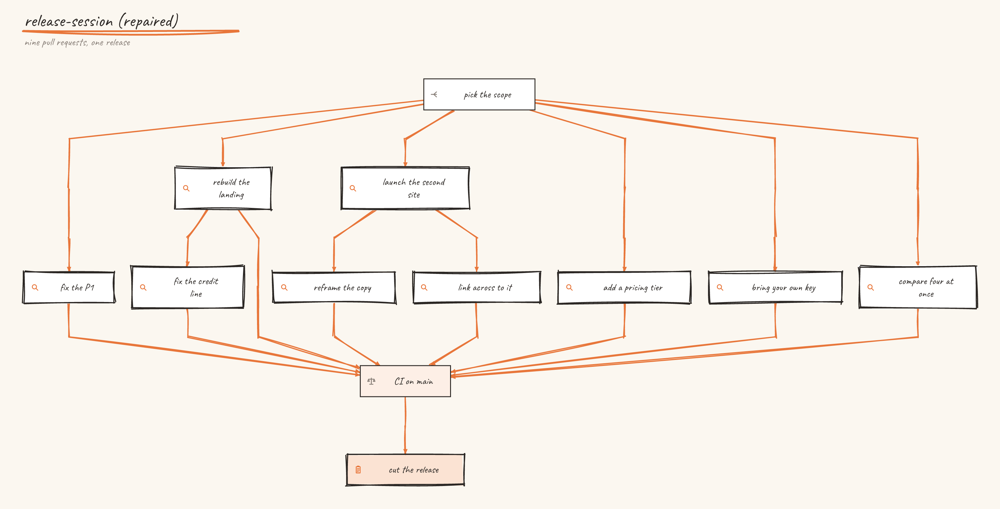
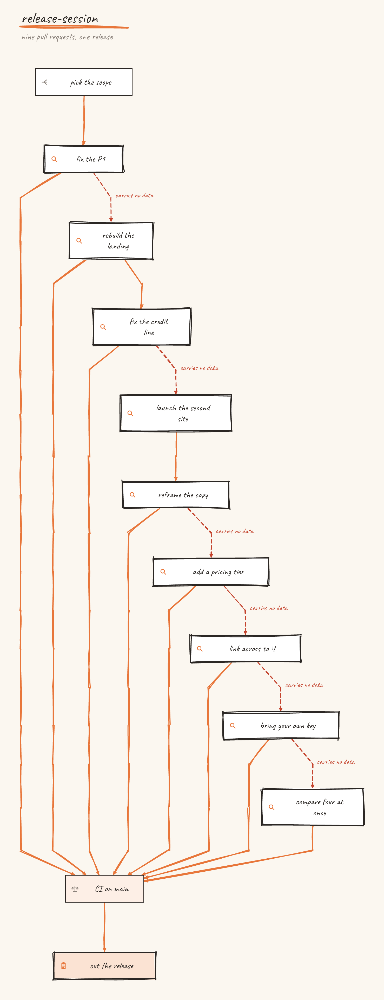
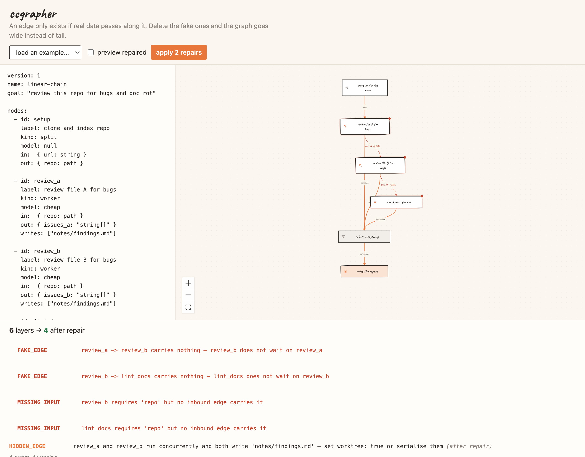

Your verifier passed work it never saw.
ccgrapher lints agent workflows for unguarded fan-ins and self-grading verifiers, then draws the plan you actually have. Open source, Apache-2.0.

Six ways a plan lies
You declare what each step reads and writes. The linter checks the claim. Speed falls out of it, but the point is the checks that were not checking.
SILENT_FAILUREA join with no count guard. One branch dies quietly and the result still says done.
SELF_GRADINGA verifier marking its own homework, in the same context that did the work.
FAKE_EDGEThe step was never waiting. The edge carries no data, only habit.
MISSING_INPUTA step reads something nothing upstream supplies. Usually the real dependency you missed.
HIDDEN_EDGETwo concurrent steps writing the same file, with no isolation between them.
CONTEXT_COLLAPSEThirty results landing on one reader with no reduce step in front of it.
The same work, drawn honestly
Nine pull requests, shipped one after another. Six of them were never waiting on anything. Nothing about the work changed, only the claim about its shape.

It reads your history, not your intentions
Retrospective mode rebuilds the graph from your merged pull requests, with edges only where two changes touched the same files. First live run on one of our own repos went from fifteen layers to five, and nobody wrote any YAML.
# the as-merged workflow of any repo
npx @ccgrapher/cli retro your-org/your-repo --lint
# what is wrong with the shape of a plan
npx @ccgrapher/cli lint plan.yaml
npx @ccgrapher/cli plan plan.yaml --fix
The picture is the argument
YAML on the left, the graph beside it, findings underneath. Nodes are not draggable on purpose: the drawing is a consequence of what each step declares, so the picture cannot be arranged into a lie.
Free to read, paid to run.
The toolkit is Apache-2.0 and stays that way. ccgrapher Cloud is the managed service beside it: you bring the spec, we run the queue, the worktrees, the timeouts, the trace store, and the gate that waits for a human to click approve.
It will run on the same open packages, unchanged: whatever the service uses to execute a graph, you can read and run yourself. Those parts are being built in the open now, in the repository.
The first paid thing is small: a workflow audit
We run retrospective mode against your merged pull requests and show you which steps were never waiting, and which of your checks never checked anything. No codebase access needed, only public history.
Ask for an audit